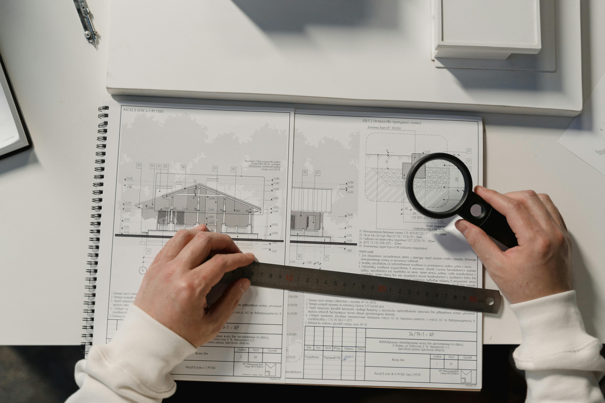
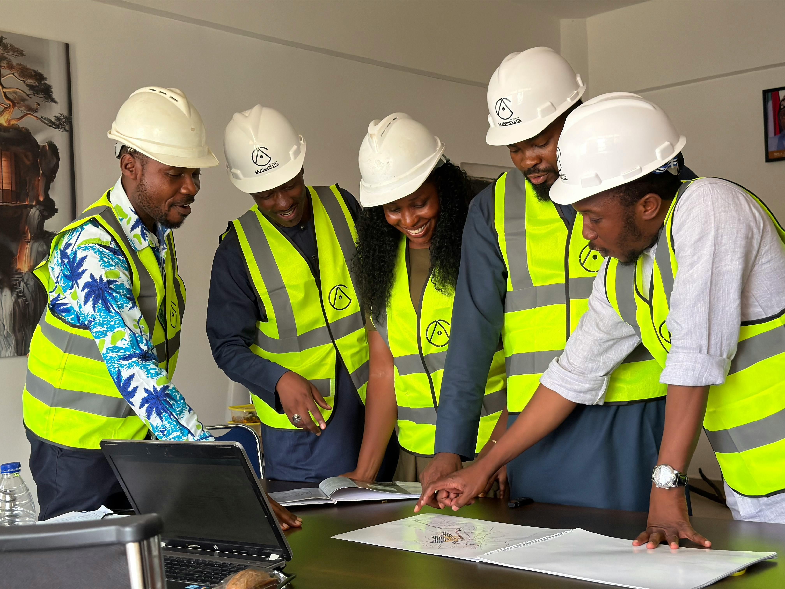

Planning & Designing Functional Spaces
JA2K provides architectural and engineering support services focused on project planning, technical drawings, and structured development solutions.
Architectural Drawings
We assist clients with architectural drawings and layout planning to help visualize and organize construction projects effectively.
- - Residential and commercial drawings
- - Modern layout planning
- - Functional space organization

Engineering Support
Our engineering support services help ensure that projects are planned with practical, safe, and efficient construction solutions.
- - Technical planning assistance
- - Construction support solutions
- - Project coordination guidance

BLUP-Related Services
We provide support with BLUP-related (Building and Land Use Permit) processes and project preparation to help clients move forward with construction planning requirements.
- - BLUP preparation support
- - Project documentation assistance
- - Construction planning guidance
Need Architectural or Engineering Support?
Contact JA2K for professional planning and project development services.
CONTACT US